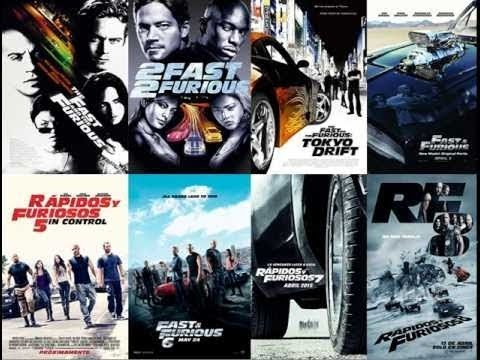
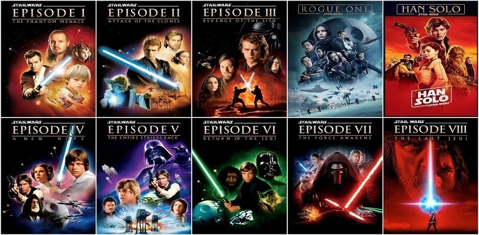
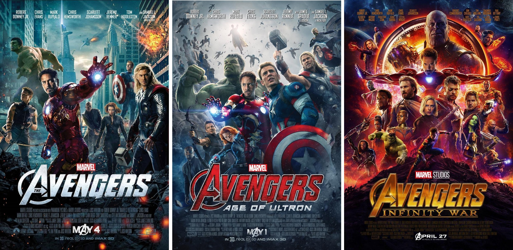
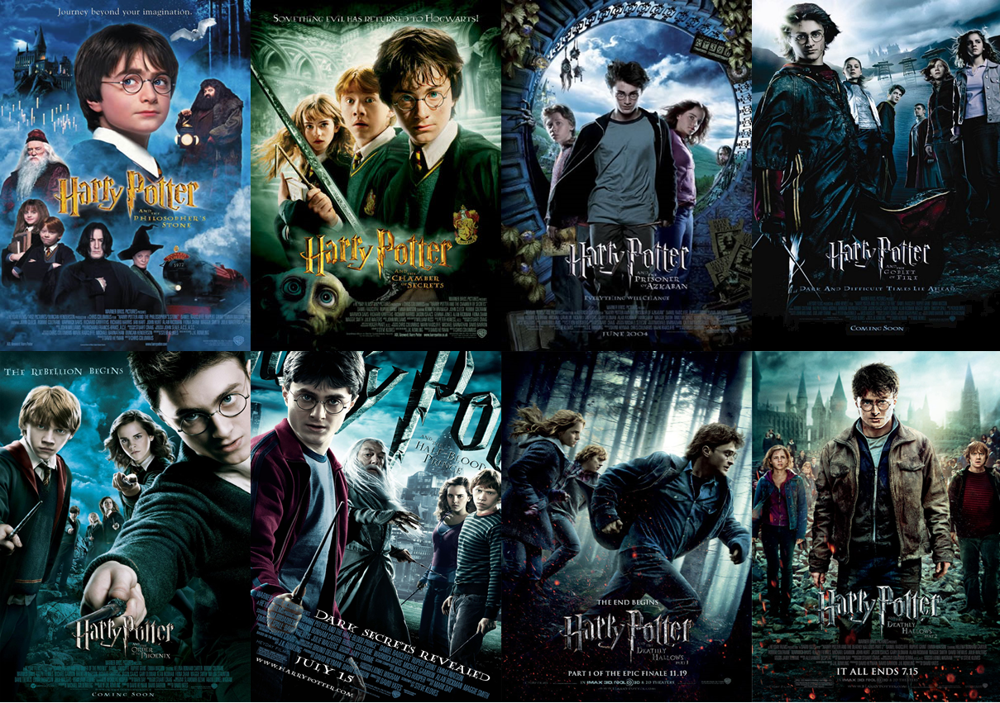

Curiosidades
Top 10 películas más taquilleras de la historia:
Sagas más conocidas:
Fast & Furious: La saga fílmica The Fast and the Furious (Fast & Furious: A todo gas en España; Rápido y furioso en Hispanoamérica) es una serie de películas de acción que conforman una franquicia que se centra en un género cinematográfico de carreras callejeras ilegales.

Star wars: es una franquicia de películas en el espacio. Su trama describe las vivencias de un grupo de personajes que habitan en una galaxia ficticia e interactúan con elementos como «la Fuerza», un campo de energía metafísico y omnipresente que posee un «lado oscuro» provocado por la ira, el miedo y el odio.

The Avengers: Los Vengadores son un equipo ficticio de superhéroes que aparecen en cómics estadounidenses publicados por Marvel Comics.

Sagas basadas en libros:
El señor de los anillos: La trilogía cinematográfica de El Señor de los Anillos, basada en la novela homónima del escritor británico J. R. R. Tolkien, comprende tres películas épicas de fantasía, acción y aventuras: El Señor de los Anillos: la Comunidad del Anillo (2001), El Señor de los Anillos: las dos torres (2002) y El Señor de los Anillos: el retorno del Rey (2003).

Harry Potter: La serie cinematográfica de Harry Potter comprende ocho películas basadas en Harry Potter, una serie de siete novelas juveniles redactadas por la autora británica J. K. Rowling y protagonizadas por el mago ficticio del mismo nombre. Se trata de películas de cine fantástico, todas basadas en las novelas de la saga y todas estrenadas en el decenio comprendido entre 2001 y 2011.
